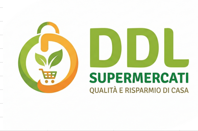

La nostra storia, i nostri valori e l'impegno verso i nostri clienti.
Da oltre cinquant'anni lavoriamo per portare sulle tavole degli italiani prodotti freschi, sicuri e di altissima qualità. Il nostro impegno quotidiano si basa sulla valorizzazione del territorio, supportando i produttori locali e garantendo filiere controllate e trasparenti. Crediamo che fare la spesa non sia solo un gesto quotidiano, ma una vera e propria scelta di benessere per tutta la famiglia. Inoltre, lavoriamo costantemente per ridurre l'impatto ambientale della nostra rete, ottimizzando la logistica e promuovendo l'uso di imballaggi sostenibili e riciclabili.
Ragione Sociale: Supermercati Mockup S.p.A.
Sede Legale: Via della Spesa, 123 - 40100 Bologna BO
Partita IVA / Codice Fiscale: 01234567890
Servizio Clienti: 800-123-456 Attivo dal Lunedì al Sabato dalle 8:00 alle 20:00
Note sulle spedizioni: Le consegne a domicilio vengono effettuate tramite furgoni refrigerati per mantenere inalterata la catena del freddo. Il servizio copre attualmente tutto il territorio nazionale con tempi di consegna stimati tra le 2 e le 24 ore a seconda della zona di residenza.